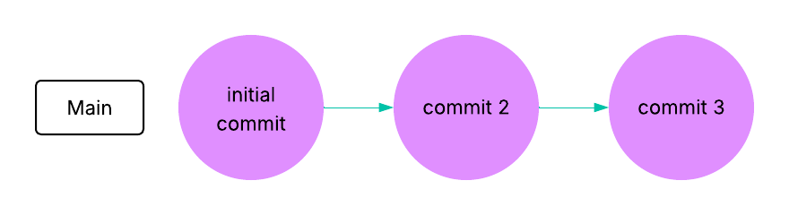
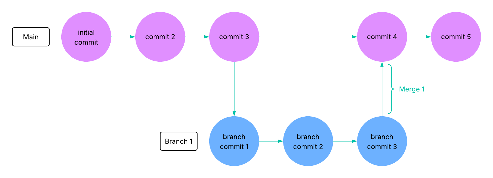

Personal Git Workflows¶
There are many possible ways to use Git to manage your projects. Here we will describe the simplest workflows for managing your own work. These workflows focus on tracking your changes, organizing new features, and backing up your work to GitHub. Workflows intended for collaboration may be more complex.
Committing your work¶
The git add and git commit commands will allow you to track your changes by saving your work along the way. You can always return to any version of the files that was saved with git commit.

Every repository begins with an initial commit, and then you periodically add more commits as you update your work.
Pushing your work¶
You can push your work to GitHub with git push. This means that not only are your changes tracked (i.e., old versions are saved), they are also backed up to the cloud (e.g., GitHub). It is always a good idea to commit and push frequently so that your work is always backed up and so that it is easy to undo any changes that you don’t wish to keep.
Branching¶
Branches allow you to have multiple versions of the code at once. When working alone you may not necessarily need to use branches, however they can still have their benefits. It is common to treat your primary version of the code (typically called the main branch) as something that should remain stable (i.e., no bugs or errors). In that case, you may want to create a branch in order to develop new work, without altering the main branch. Once you are satisfied with the status of the work
on the feature branch (branch 1), you can merge it back into main with git merge.

Branches also allow for two versions of the code to be worked on simultaneously. In the diagram below, you can see that commit 4 was added to the main branch while branch 1 was under development. This is convenient if you have multiple independent features to work on. Separate branches and separate commits allow you to undo or inspect a particular change to the code without losing other work.
If you have many different ideas or features, you may have as many branches at once as you like. The git merge command allows you to continually update your branches with changes on main and vice versa. We will talk more about merging, creating new branches, and collaborative workflows in a later section of the workshop.